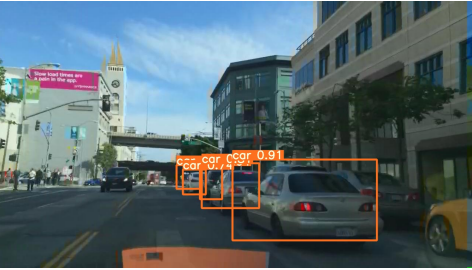
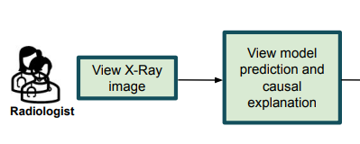
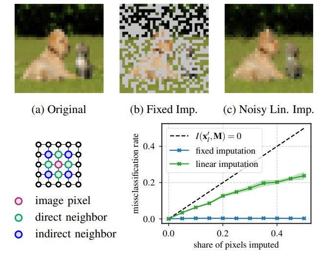
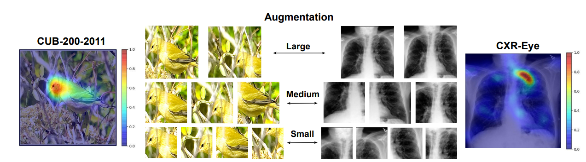
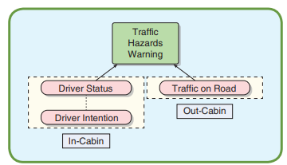

|
I am a PhD studnet in Human Computer Interaction led by Prof. Enkelejda Kasneci at University of Tübingen. I recieved my master's degree in Electrical and Computer Engineering from TU Munich in 2019, and B.Eng. degrees in Mechatronics from both Tongji University in Shanghai and Munich University of Applied Sciences in 2016, as part of a double degree program. My research interest lies at the intersection of human and artificial intelligence: Computer Vision, Explainable AI, Human-Computer Interaction, Human-centered AI and Deep Learning. I aim to bring human knowledge into AI models, thus developing AI applications that humans can well understand and trust. Email / Google Scholar / Github / CV / |
{kind=link}
|  |
Yao Rong, Naemi-Rebecca Kassautzki, Wolfgang Fuhl, Enkelejda Kasneci PACMHCI, 2022 |
|  |
Yao Rong, Nora Castner, Efe Bozkir, Enkelejda Kasneci TRAIT at CHI, 2022 |
|  |
Yao Rong*, Tobias Leemann*, Vadim Borisov, Lorenzo Torresani, Gjergji Kasneci, Enkelejda Kasneci Pre-print, 2022 |
|  |
Yao Rong, Wenjia Xu, Zeynep Akata, Enkelejda Kasneci BMVC, 2021 |
|  |
Yao Rong, Chao Han, Christian Hellert, Antje Loyal, Enkelejda Kasneci ITSM, 2021 |

|
Yao Rong, Zeynep Akata, Enkelejda Kasneci ITSC, 2020 |

|
Okan Köpüklü, Thomas Ledwon, Yao Rong, Neslihan Kose, Gerhard Rigoll FG, 2020 |
|
Okan Köpüklü, Yao Rong, Gerhard Rigoll ICCV Workshop, 2019 |